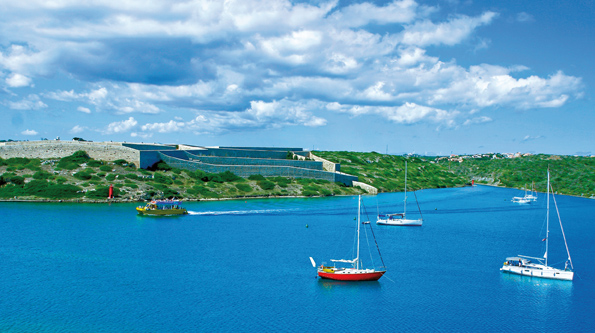
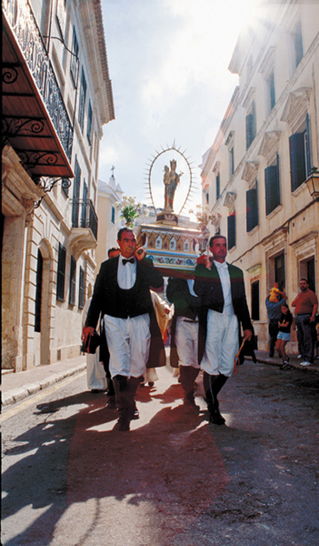
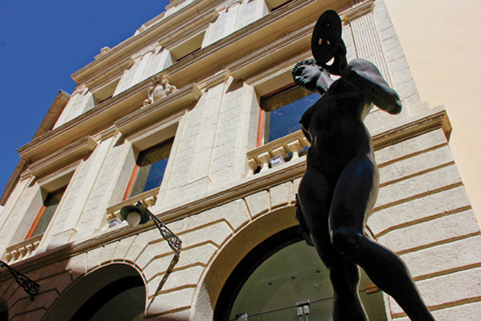
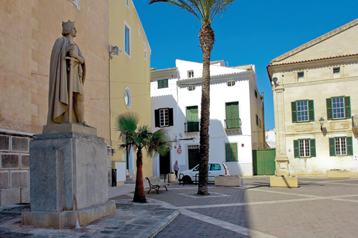

Maó. The Myth of the LifeLess City
Malicious tongues like to say that the Port of Mahón was the scene of an infamous capitulation in the XVI century, on the 1st of September 1535 to be exact. On that day, the regrettably notorious pirate Barbarossa sailed into the Port of Mahón, and moored in front of the city, at that time a town of shopkeepers and traders with scarce military spirit. After a mere three days of siege, the inhabitants were ready to negotiate. According to this black urban legend, Barbarossa demanded that the town be sacked and its inhabitants taken prisoner, with the exception of ten specific houses. Once the Turks had left, the authorities in Ciudadela arrested their counterparts in Mahón and accused them of treason, which sounded rather better than accusing them of accepting defeat, for which they too should have borne the blame. Twenty three years later the Ottomans returned to Mahón where they were repelled by artillery from the fledgling Fort of San Felipe and took off for Ciudadela. But that's another story....
Despite the fact that eminent historians have shown this story of treachery to be untrue, confirming that Mahón had neither defences nor a military garrison and was therefore forced to surrender since the city walls had been breached, the myth of Mahón's presumed cowardice has persisted. As opposed to the civic bravery of the inhabitants at the other end of the island when, years later, Ciudadela too was invaded by the Saracens (which allowed some nobles to take advantage of the situation and grab land belonging to the prisoners in Constantinople). The myth remains as a slur on the honour of the people of Mahón, and is perhaps the origin of the traditional rivalry that exists between the two ends of the island.
In time, Mahón and its port were viewed with greater objectivity by more civilized invaders, namely the British, who made Mahón the capital and dispatched the troublesome clergy off to the Western end of the island, where they remain happily to this day. The sons of Perfidious Albion did indeed recognize the marvel that was the Port of Mahón, and the particular characteristics of the inhabitants, so hospitable, not given to adventuring or any sort of religious fanaticism, supporters of the arts and free trade. In general the British and Mahoneses got on well, mingling together in the large aristocratic houses on Isabel II. One can imagine them making fun of the number of priests per square meter in Ciudadela, and the antics of the Holy Inquisition, from which Menorca was freed during that same century.
So what is the essence of being a "Mahonés"? According to the fictitious Oliago Pons, who for a couple of years played a part in the Fiestas de Gracia, Mahón is the most classless city on the face of the earth. Everyone goes to the same schools where they exchange ideas and opinions, they attend the same hospitals where they exchange bodily fluids and fumes, and they are particularly prone to socialize without any distinction of class. As Oliago said in his opening speech at the Fiestas, the Mahoneses are neither daring, quarrelsome nor dreamers, they are simply happy to accept "una cosa que estigui bé", that is, something good enough. However, in spite of all this, they have always known how to get things moving, how to establish a great network of businesses (entrepreneurs in the true sense of the word who had no need of "coaching"): manufacturing industries such as the Fabril Mahonesa or the Anglo-Española de Motores. Not to mention the burgeoning silver-mail purse industry, and later on, adding machines, costume jewellery, shoe-making, and the splendid cheese, named after the "beautiful and gallant" city, words taken from an extravagantly affectionate song in praise of Mahón.
However, the essence of being a Mahonés cannot be understood without reference to ideas of the XVIII century Enlightenment. The presence of both the British and the French enabled students from Mahón to be in touch with Europe. According to old Professor Hernández Mora (as related by Josep Mª Quintana, another true intellectual, in his magnificent book "Maó"), this effect was only to be found in Mahón, and the liberal and cultured reputation of the city was based on solid foundations. The Athenaeum which was the centre of lectures and debates, the Orfeón Mahonés the focus for theatre, and the Teatro Principal itself which has always staged first-class opera thanks to the Amigos de la Ópera. Plus the Juventudes Musicales (the Association for Young Musicians), the Friends of the Organ in the church of Santa María, the Menorca Museum, the Hernández Mora collection, the Public Library, and so on.
But above all Mahón is its port, arguably the most beautiful in the Mediterranean. For the people of Mahón there is no question. In good weather they stroll along the quays, greeting each other when they meet, promenading "red mullet up, red mullet down", (this is a Menorcan play on words: the word "moll" meaning both quay and red mullet). In winter, on Saturday mornings, they prefer to stroll along the pedestrianised streets in the centre of town, such as Es Carrer Nou and S'Arravaleta, and the more recent Ses Moreres and Sa Costa de sa Plaça, all of these being rather more entertaining meeting places than the Internet. This is a city that is unusual because of the intensity of its cultural life, rich in exhibitions, lectures, conferences, opera, seasons at the Film Club. This is a city that belies the myth that it is dead, a myth spread by people nostalgic for an ancient past. This city challenges anyone even slightly interested in cultural events to join in the weekly obstacle course that runs every weekend. However, take it easy, life in Mahón should be driven in the slow lane. And you don't need to take sides. You don't need to try hard to be a "bon maonés". We're neither jingoistic nor exclusive. Just go with the flow.